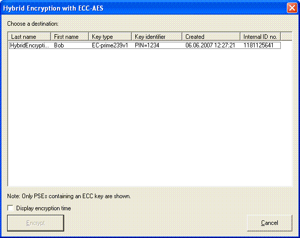
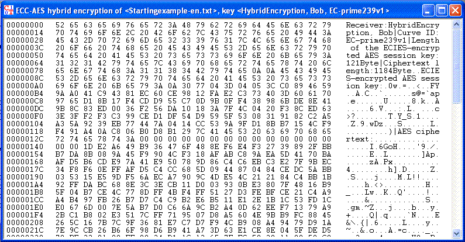

This dialog is supposed to restore encrypted documents based on the ECC-AES encryption.
You can start this decryption dialog through the menu selection Encrypt/Decrypt \ Hybrid \ ECC-AES-Decryption.
After selecting the right key pair and entering the valid PIN code you can start the encryption by clicking the button Decrypt.
The required encryption time can be shown by activating the checkbox.
The plaintext of the encrypted ECC-AES document is shown in the CrypTool main window:
